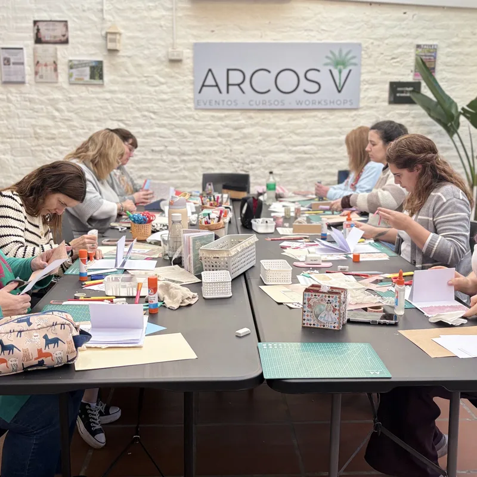
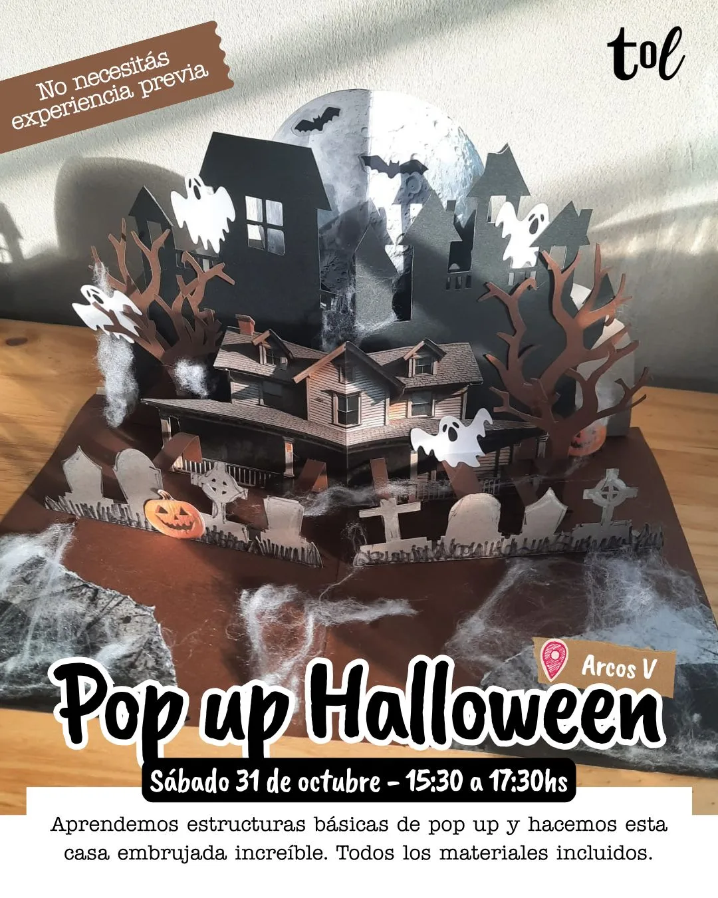
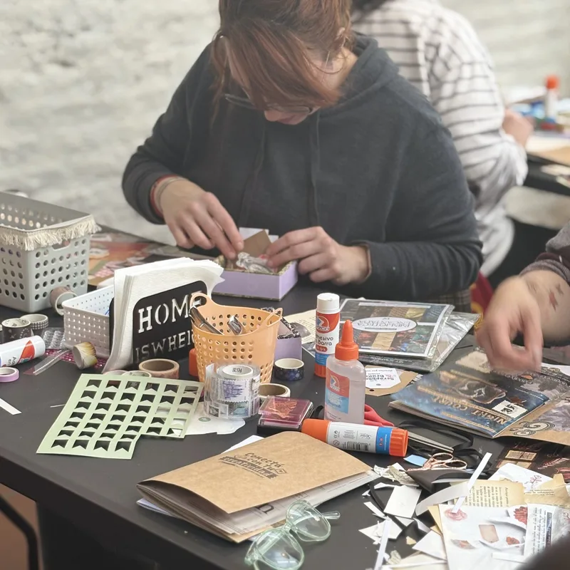
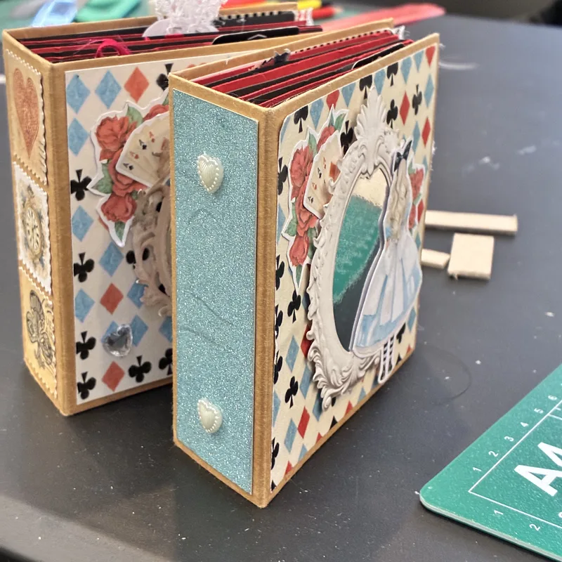
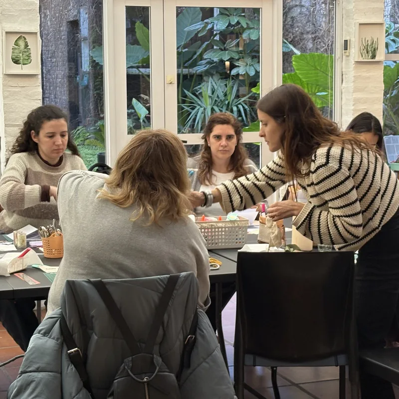
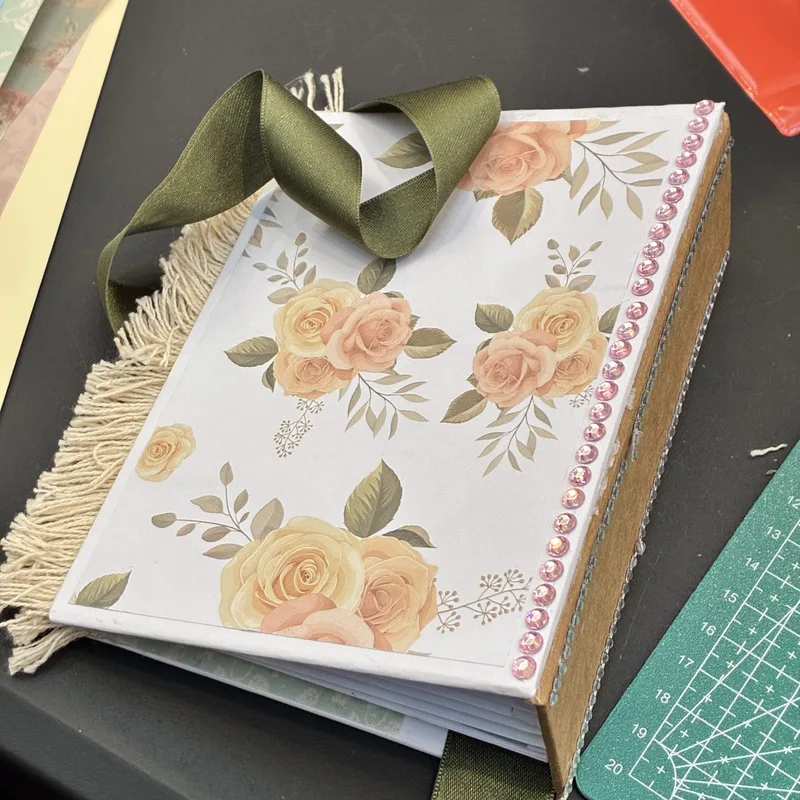
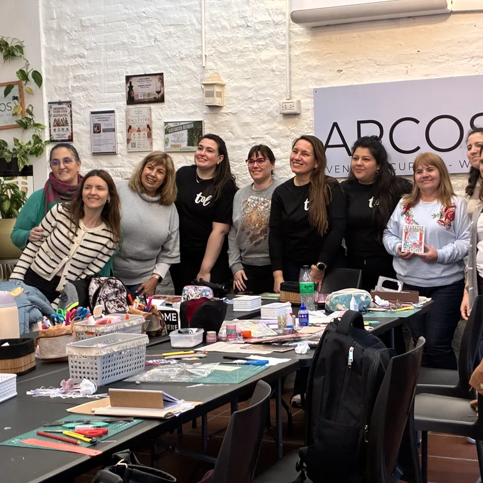

Una jornada para armar tu propia pieza de papel: cortar, pegar, componer y decidir cómo se ve. Se trabaja sobre una mesa larga llena de papeles, sellos, troqueles y materiales, y te llevás tu trabajo terminado.
Próximamente habrá nuevas fechas.

Consultar por WhatsAppCada encuentro gira alrededor de una pieza distinta, así que se puede volver muchas veces sin repetir. Cambia el proyecto, cambian las técnicas y cambia lo que te llevás a casa.
No hace falta experiencia previa ni traer nada: los materiales están sobre la mesa y hay acompañamiento paso a paso durante toda la jornada. Son grupos medianos alrededor de una mesa larga, con espacio de sobra para desplegar papeles y trabajar cómoda.
Los encuentros incluyen una pausa con merienda, que en los días lindos se hace en el jardín.
Composición sobre papel: álbumes, tarjetas y piezas decorativas armadas con papeles estampados, recortes, sellos, troqueles y capas. Es la puerta de entrada más fácil si nunca hiciste nada parecido.
Armado de libretas y cuadernos desde cero: plegado de pliegos, costura del lomo y tapas decoradas a mano. Se trabaja con la estructura del objeto, no solo con la superficie.
Por Arcos V ya pasaron varias jornadas de scrapbook y encuadernación, con dos turnos por fecha y la mesa larga llena de gente trabajando toda la tarde.





Las consultas e inscripciones las gestionan directamente las chicas de TOL Objetos de Diseño.
Consultar por WhatsApp